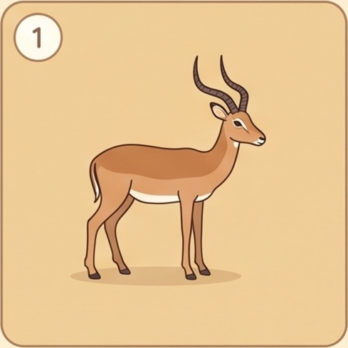
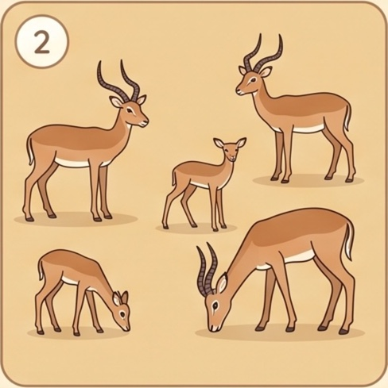
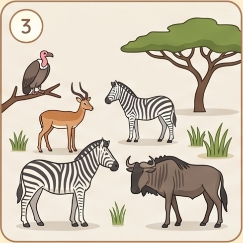
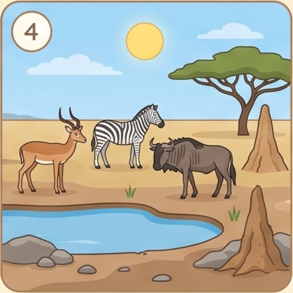
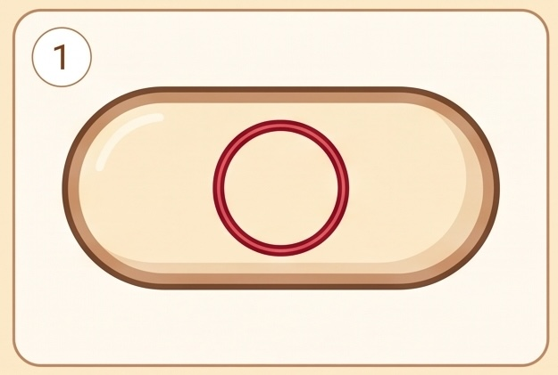
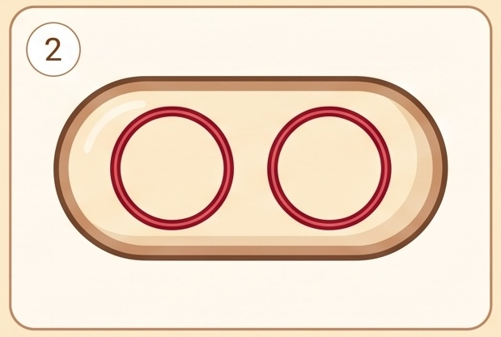
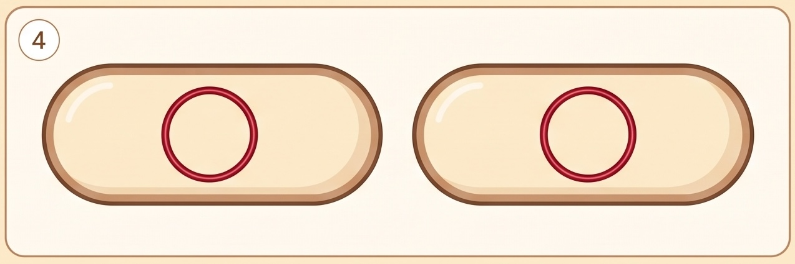

3.1 How Populations Grow
The unit overview left you with 29 reindeer becoming 6,000 in nineteen years. This chapter explains the first half of that curve — why growth accelerates, how fast "fast" really is, and why nobody's intuition is any good at it. The second half, the cliff, is Chapter 3.2.
What exactly is growing
Before anything can be counted, it has to be clear what is being counted. A population is a group of organisms of the same species, living in a particular geographical area, capable of interbreeding.
Every word in that sentence is load-bearing. Same species: the reindeer and the arctic foxes on an island are two populations, not one. Particular area: the reindeer on St Matthew Island are a different population from the reindeer in Norway, because what happens to one does not happen to the other. Capable of interbreeding: that is what makes them a unit at all — a population shares a gene pool, so it can change over time in a way that a random collection of animals cannot.
A population sits inside a larger nest of ideas, and knowing which level a question is about saves a lot of confusion later:

1 · Organism One individual.
2 · Population All the impala here. One species, all ages. Chapters 3.1–3.3
3 · Community Every species here. Living things only. Chapter 3.4 onwards
4 · Ecosystem The community, plus the non-living things it depends on: water, soil, sunlight. Chapter 3.4 onwardsA population changes size for exactly four reasons: births, deaths, immigration (individuals arriving) and emigration (individuals leaving). There is no fifth. Every mechanism in this entire unit — disease, predation, drought, a fishing ban — has to work through one of those four to change a number.
On an island in the Bering Sea, immigration and emigration are effectively zero. That is precisely why islands are such good natural experiments, and why so much of this unit happens on them.
Why growth accelerates
Start with the simplest possible case. Bacteria reproduce by binary fission: a cell copies its DNA and splits into two, and each of the two is a complete, independent copy of the original.

1 · One cell The chromosome is a single circular loop, loose in the cytoplasm. There is no nucleus.
2 · Copy the DNA The loop is replicated. Two identical copies, and the cell is still the same size.
4 · Split The wall closes. Two cells, each with a complete copy of the chromosome, each able to do the whole thing again.Now count. Every cell divides, so every generation the whole population doubles:
| Generation | 0 | 1 | 2 | 3 | 4 | 5 | 6 | 7 | 8 | 9 | 10 |
|---|---|---|---|---|---|---|---|---|---|---|---|
| Cells | 1 | 2 | 4 | 8 | 16 | 32 | 64 | 128 | 256 | 512 | 1,024 |
| New this generation | — | 1 | 2 | 4 | 8 | 16 | 32 | 64 | 128 | 256 | 512 |
Look at the bottom row against the top row. Every generation adds as many new cells as existed in total up to that point. Generation 10 produces 512 new cells, and 512 is exactly how many were alive after generation 9. Nothing about the cells has changed — each one still just splits in two — but the number being added gets bigger every time, because there are more of them doing it.
That is exponential growth, and it is the single most important definition in this chapter: growth where the amount added is proportional to the amount already there. Money in a savings account does it. A rumour does it. A virus does it. Reindeer on an island with no predators do it.
Exponential does not mean "fast". A population growing at 2% a year is growing exponentially and looks completely flat for decades. What makes growth exponential is not its speed but its shape — the fact that the rate of increase depends on the current size. A population of ten rabbits adding one rabbit a year and a population of ten million adding a million a year are growing at exactly the same rate.
Build one yourself
This is the question your teacher opens the unit with, and it is worth taking seriously before you scroll past it. Commit to an answer — actually pick one — before the machine below will show you anything.
The doubling machine
Interactive- At generation 10 the graph looks almost flat against the bottom of the chart. At generation 24 it has gone off the top. Nothing changed in the model between those two moments. Explain, in one sentence, why the curve looks so different at the two ends.
- Switch to the doubling axis. The same data becomes a straight line. What does a straight line on that axis tell you about how a population is growing?
- Change "starting cells" from 1 to 10. Does the curve change shape, or only position? What does your answer say about how much the starting number matters?
- Suppose you doubled the size of the bottle. How many extra minutes would that buy the bacteria? Now say what that implies about solving a resource problem by finding more of the resource.
The J-curve, and the trick for reading it
Plotted on ordinary axes, exponential growth makes a shape people call a J-curve: a long flat stretch, then a bend, then a near-vertical climb.
The flat stretch is a lie of the eye. Nothing has slowed down in it — the population is growing at exactly the same rate there as it is in the vertical part. It only looks flat because the numbers involved are tiny compared with what comes later, and the axis has to be tall enough to fit the end of the story.
This is a genuine problem for anyone trying to spot a runaway population early, and there is a standard fix. Redraw the same numbers on an axis where each step up is a multiple rather than an addition — 1, 10, 100, 1,000 instead of 1, 2, 3, 4. That is called a logarithmic or log axis.
Straight on a log axis means exponential. That is the whole trick, and it is worth committing to memory, because it works on any dataset you will ever be given. If a graph's y-axis climbs 1, 10, 100, 1,000 and the data lies on a straight line, the thing being measured is multiplying by a constant factor in every equal step of time.
It is also why so many news graphs during an epidemic switch to a log axis. On ordinary axes, "doubling every three days" and "doubling every twelve days" look almost identical for the first fortnight. On a log axis they are two straight lines with obviously different slopes.
Doubling time, and the arithmetic behind it
"It doubles every twenty minutes" is a description of a bacterium in a warm flask. Most populations are not so obliging: reindeer do not double neatly, they grow by some percentage a year. The two descriptions are the same thing said differently, and converting between them is a genuinely useful skill.
If a population grows at a steady rate r per year, its doubling time is
doubling time ≈ 70 ÷ (percentage growth per year)
This is called the rule of 70. It is an approximation of ln 2 ÷ r, and it is accurate enough for any question you will be asked:
| Growth rate | Rule of 70 | Exact (ln 2 ÷ r) |
|---|---|---|
| 1% per year | 70 years | 69.3 years |
| 2% per year | 35 years | 34.7 years |
| 3% per year | 23.3 years | 23.1 years |
| 7% per year | 10 years | 9.9 years |
| 10% per year | 7 years | 6.9 years |
Now put the reindeer through it. Twenty-nine animals in 1944 became about 1,350 by 1957 — thirteen years. That works out at a growth rate of about 34% a year, which by the rule of 70 is a doubling time of just over two years. Thirteen years at two years a doubling is between five and six doublings, and 29 × 25.5 is 1,312 — against a census of 1,350. The arithmetic agrees with the count, which is the point: exponential growth is not mysterious, it is multiplication done often.
Why 30% is not an absurd number for reindeer. A reindeer cow can produce one calf a year from about age three, and on St Matthew there were no wolves, no bears, no hunters, no competitors, and lichen that had been accumulating undisturbed for centuries. Nearly every calf born survived. Under those conditions a herd of large mammals can genuinely add a third to itself annually — for a while.
For the curious only. Written as an equation, exponential growth is dN/dt = rN: the rate of change of the population (dN/dt) equals the growth rate (r) multiplied by the current population (N). Read it in English and it says exactly what the table in the last section showed — how fast it grows depends on how big it already is. You are not required to use this equation, and no question in this unit will need it. It is here because seeing the sentence and the symbols side by side is often the moment the symbols stop being frightening.
Why this can never last
Here is the argument that closes the chapter, and you should be able to make it yourself.
A single E. coli cell divides about every twenty minutes in good conditions. Twenty-four hours is 72 generations. 272 is about 4.7 × 1021 cells — and since a bacterium weighs roughly a picogram, that is about 4,700 tonnes of bacteria. From one cell. In one day. Keep going and after 132 generations — 44 hours, not even two full days — the pile outweighs the Earth.
This has never happened. It is not going to happen. Therefore something stops it — reliably, universally, and long before the numbers get silly. Whatever that something is, it must be capable of shutting down a process that starts out completely unstoppable.
Your anchor guide asks you to list three reasons a population could not grow exponentially in the long term. Here is the honest list, and every one of them is a limiting factor:
- Food runs out. Every organism needs energy and matter, and both are finite in any real place. The reindeer ate the lichen faster than lichen grows — and lichen grows extraordinarily slowly, a few millimetres a year.
- Space runs out. Nesting sites, territories, room on a rock. Whatever cannot be shared eventually cannot be found.
- Waste accumulates. The bacteria in that flask poison themselves with their own metabolic products long before they run out of sugar.
- Disease and parasites spread faster in a crowd. A pathogen that cannot find a new host in a sparse population spreads easily in a dense one.
- Predators find you. A predator population feeds on the prey population and grows with it — which is a limit that grows as you do.
Notice what all five have in common: they get worse as the population gets bigger. That is not a coincidence, it is the definition of a whole category of limiting factor, and Chapter 3.2 gives it a name and a graph.
Quick check
Reindeer on St Matthew Island and reindeer in Norway are counted as two populations, not one. Why?
Every word of the definition earns its place: same species, particular area, capable of interbreeding. The area is what makes an island such a useful natural experiment — with immigration and emigration at effectively zero, only births and deaths can move the number.
Impala, zebra and wildebeest graze the same plain together, yet they are counted as three populations rather than one. Which part of the definition separates them?
The definition does two separating jobs at once. Species is what splits one plain into several populations; area is what splits one species into several populations. Interbreeding is what makes each of them a unit that can change over time at all.
A population of ten million adds a million individuals a year. A population of ten rabbits adds one rabbit a year. Which is growing faster?
Exponential does not mean fast. It means the amount added is proportional to the amount already there — so the shape is the same whether the numbers are tiny or enormous.
In the doubling table, generation 5 adds 32 new cells and generation 10 adds 512. What has changed about the cells between those two generations?
Exponential growth needs no change in the individuals whatsoever. The rule each cell follows is fixed; only the number of cells following it rises — which is why the new cells in any generation exactly match the total that existed before it.
Bacteria doubling every twenty minutes fill their bottle at generation 60. You give them a bottle twice the size. How much longer do they last?
Doubling the resource buys exactly one doubling time. This is the most useful idea in the chapter for arguing about real resource problems: finding more of a resource shifts the deadline by a rounding error, while the growth rate decides everything.
Bacteria doubling every twenty minutes fill their bottle completely at generation 60. At which generation was the bottle half full?
Nothing about the bottle looks alarming until the final step, because the crisis and the calm are one doubling apart. Any warning system that watches how full something looks will always be roughly one doubling time too late.
A graph's vertical axis climbs 1, 10, 100, 1,000 and the data lies on a straight line. What does that mean?
Straight on a log axis means exponential. It is the one graph-reading trick worth memorising, because it turns an unreadable J-curve into a line whose slope you can compare, extend and argue about — which is exactly why epidemic graphs switch to it.
Epidemic case numbers are plotted on a log axis. The line is still climbing, but it has begun to bend downwards. What does the bend mean?
The trick works in both directions. Straight means a constant multiplying factor; any bend means that factor is itself changing. On ordinary axes both lines would still look like the same rising curve, which is why the log axis earns its place.
A population grows at a steady 5% a year. Roughly how long before it doubles?
Doubling time ≈ 70 ÷ percentage growth per year, so 70 ÷ 5 = 14. Put the reindeer through it: 34% a year gives just over two years per doubling, which is exactly what the census counts show.
A population is observed to double every twenty years. Roughly what is its annual growth rate?
The rule of 70 runs both ways: 70 ÷ rate gives the doubling time, and 70 ÷ doubling time gives the rate. It is one relationship, not two, which is why "doubles every two years" and "34% a year" are a single division apart.
One E. coli cell dividing every twenty minutes would outweigh the Earth in 44 hours. What does that calculation establish?
This is an argument by absurd consequence, and it is the strongest one in the chapter. The pile of bacteria has never happened and never will, so limiting factors are not an occasional inconvenience — they are universal.
One E. coli cell would give 4,700 tonnes of bacteria in a day. A real flask stops growing after about a day, holding a few grams. What is the right conclusion?
Every exponential projection carries the words "under ideal conditions", and that clause does all the work. The arithmetic is never what fails. The conditions are, and they fail reliably enough that the pile of bacteria has never once been seen.
Food shortage, lack of space, waste build-up, disease and predation are all limiting factors. What do all five have in common?
That shared feature is not a coincidence — it defines a whole category of limiting factor, and Chapter 3.2 gives it a name and a graph. Factors that do not get worse with crowding, such as a hard winter, behave very differently.
Four things could cut back a growing reindeer herd. Which one would hit just as hard whatever the size of the herd?
A hard winter is as lethal to twenty-nine reindeer as to six thousand — it takes no notice of how many there are. That indifference is what marks off the second category of limiting factor, and Chapter 3.2 names and graphs both.
Where this goes next
You now have half of the reindeer curve. Exponential growth explains the rise — 29 to 6,000 in nineteen years is exactly what unchecked doubling looks like, and the arithmetic checks out. It explains nothing at all about what happened next.
Chapter 3.2 supplies the ceiling. It introduces the carrying capacity — the number an environment can actually support — and the S-shaped curve that a population makes when it approaches one gently. Then it asks the harder question, which is the one St Matthew Island really poses: why did the reindeer sail straight past their ceiling instead of settling on it? The answer turns out to be a single word, and you can find it yourself in the sandbox in that chapter.